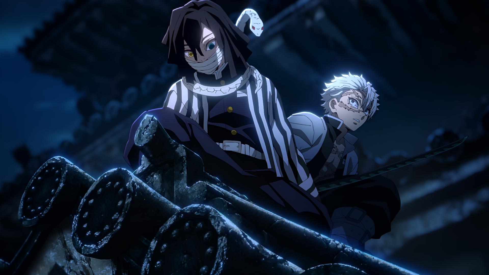
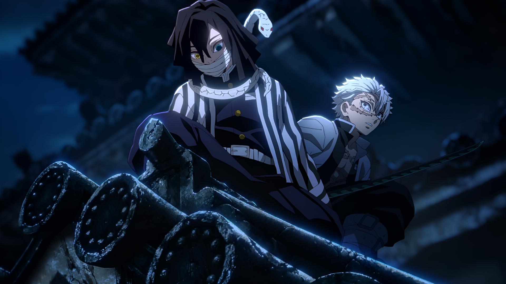
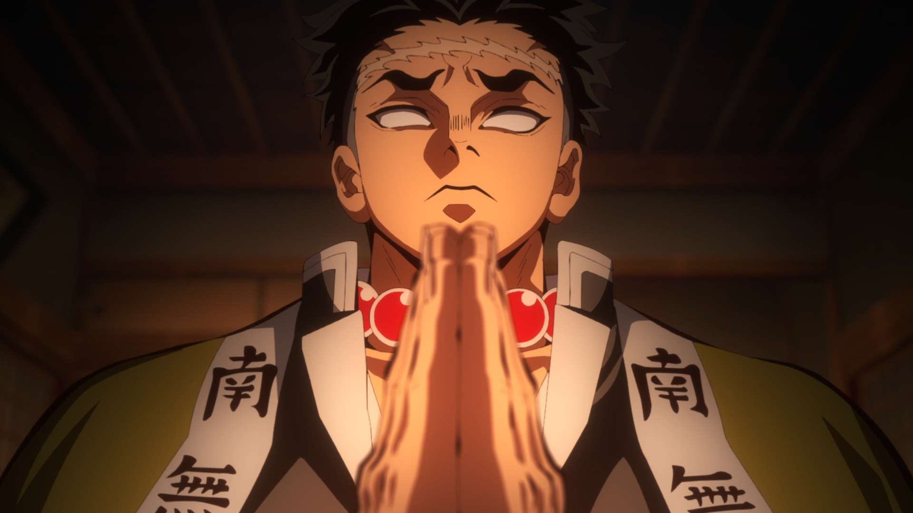
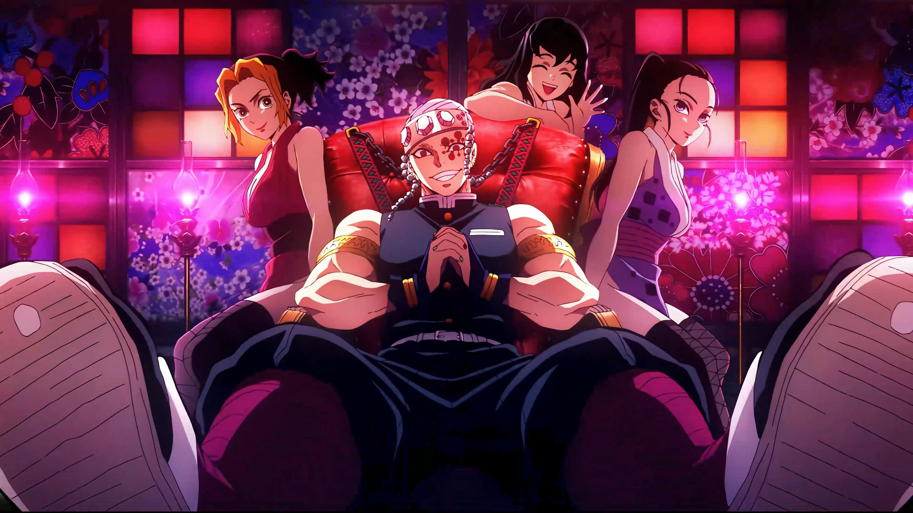
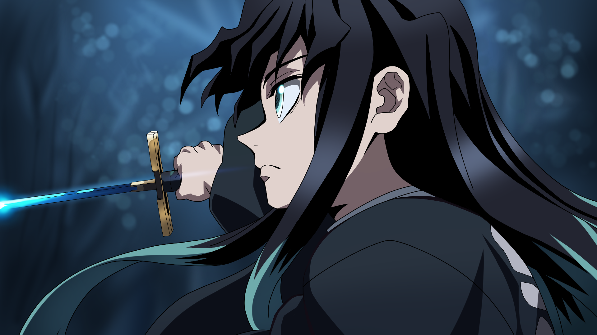
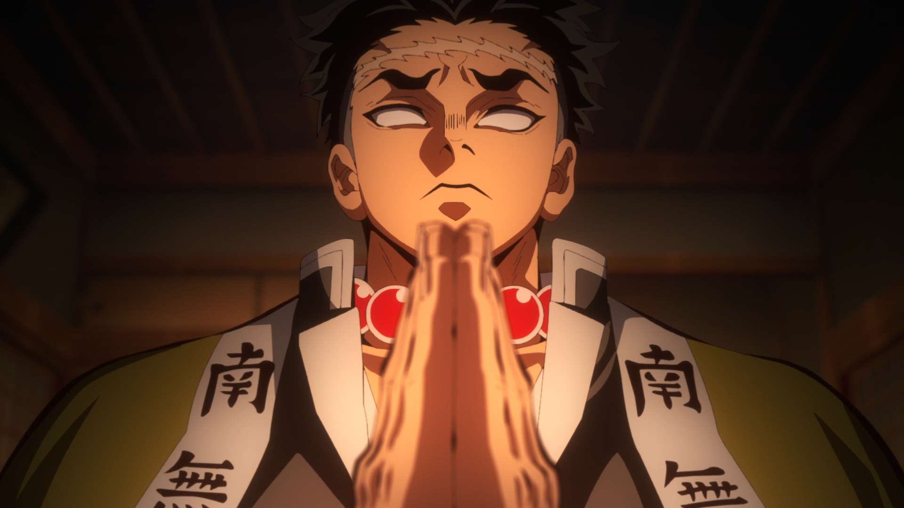
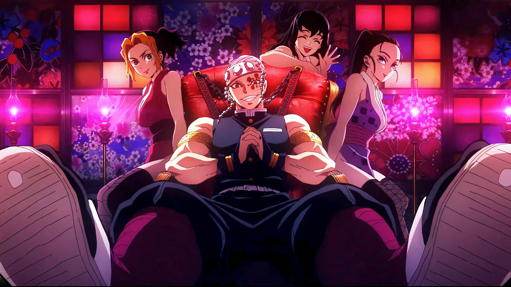
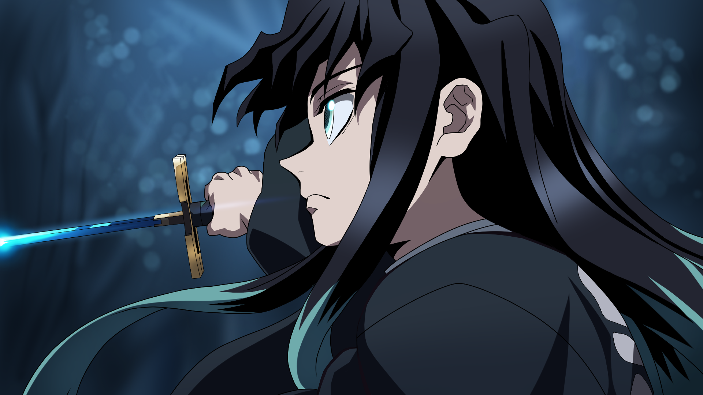

 





Demon Slayer
O que são os caçadores ?
São humanos comuns que a partir de um treinamento e do uso correto da sua respiração pode usar de poderes para enfrentar os demônios, os caçadores usam katanas feitas de um metal especifico chamado Nichirin que assim ao cortar a cabeça do demônio ele morrerá como se em contato com a luz do sol.
Demon Slayer
Tanjiro Kamado
Tanjiro é o protagonista do anime, ele é um garoto filho de lenhadores carvoeiros, vivia com os pais e os 5 irmãos, em uma noite em que transportava carvão para a vila mais próxima ele acabou passando a noite lá e ao voltar para a casa na manhã seguinte encontrou sua família morta e sua irmã transformada em um demônio, após isso ele decide se tornar um caçador de demônio e aprende a respiração da água.
Demon Slayer
Inosuke Hashibira
Inosuke é um dos amigos que Tanjiro conheçe na seleção final, é um garoto que foi abandonado pelos pais em uma floresta e dessa forma ele acaba sendo resgatado e cuidado por um bando de javalis, usa uma cabeça de javali como um capacete e desenvolve a respiração da besta.
Demon Slayer
Zenitsu Agatsuma
Zenitsu é o outro amigo que Tanjiro faz na seleção final, é um garoto criado e treinado pelo avô para se tornar um caçador, ele é extremamente medroso e pessimista e utiliza a respiração do trovão.
Demon Slayer
Giyu Tomioka
Giyu é o pilar da água, pilar ou hashira são os caçadores mais fortes da corporação de caçadores de demônio, ele é o primeiro pilar que é apresentado e ele estava encarregado de chegar e resgatar a família de Tanjiro, mas não conseguiu chegar a tempo, ele é um garoto jovem com uma personalidade bastante fria e depressiva.
Demon Slayer
Shinobu Kocho
Shinobu é a pilar do inseto, uma mulher com habilidades médicas e ciêntifícas surpreendentes, utiliza da respiração do inseto e um veneno desenvolvido por ela mesma para matar os demônios, tem uma personalidade doce e é bastante paciente.
Demon Slayer
Kyojuro Rengoku
Rengoku é o pilar da chama, trata-se de um homem extremamente forte e com uma personalidade bastante animada, confiante e alegre, com sua respiração da chama ele executa ataques extremamente rápidos e poderosos para matar os demônios.
Demon Slayer
Mitsuri Kanroji
Mitsuri é a pilar do amor, uma mulher extremamente forte, mas em contraste possui uma personalidade extremamente delicada, amorosa e simpática, com a respiração do amor e uma espada forjada especialmente para ela, a hashira consegue moldar a espada em vários formatos atacando os demônios como se os açoitasse com um chicote.
Demon Slayer
Obanai Iguro
Iguro é o pilar da cobra, utiliza de golpes extremamente rápidos e imprevisivéis que só são possíveis com sua respiração da cobra, é um garoto reservado e meio antipático, mas possui uma paixão por Mitsuri, também é parcialmente cego do olho esquerdo.
Demon Slayer
Sanemi Shinazugawa
Sanemi é o pilar do vento, com sua respiração consegue executar golpes extremamente rápidos e cortantes fazendo os seus oponentes em pedacinhos, é extremamente irritado, pavio curto e brigão e possui diversas cicatrizes ao redor do corpo.
Demon Slayer
Gyomei Himejima
Gyomei é o pilar da rocha, trata-se de um ex-monge e um homem extremamente alto e forte, é o mais velho dentre os hashira, usa da respiração da rocha e de um machado conectado em uma corrente, já que por ser cego dos dois olhos ele consegue escutar sua arma e ter melhor noção do que está fazendo do que se utilizasse de uma katana comum.
Demon Slayer
Tengen Uzui
Uzui é o pilar do som, usa de ataques extremamente rápidos e explosivos derivados da sua respiração do som, é descendente de uma família de shinobis, é forte, orgulhoso,extravagante e tem 3 esposas que também são shinobis e o auxiliam em combate.
Demon Slayer
Muichiro Tokito
Muichiro é o pilar da névoa, um garoto que perdeu as memórias e não lembra do seu passado, se distrai com facilidade e muitas vezes se encontra distraído nos próprios pensamentos, porém em combate se encontra extremamente focado e derrota diversos demônios com maestria.